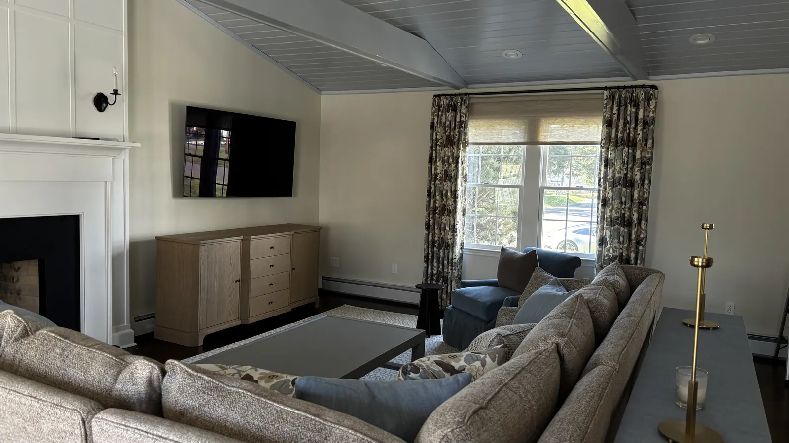
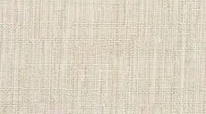

Hunter Douglas · Sheers & shadings
Pirouette® window shadings
Combine beautiful views and privacy with Pirouette® Window Shadings. These innovative window treatments, which feature beautiful fabric options, have soft, adjustable fabric vanes attached…
Floating vanes provide the perfect light
If you crave clean lines and straightforward design, consider Pirouette® Window Shadings—a modern alternative to traditional fabric shades.
An exclusive product to Hunter Douglas, Pirouette shadings feature softly contoured, front-facing fabric vanes attached to a single sheer backing. During opening and closing, the vanes move in tandem for a fluid, graceful effect. Pirouette shadings can also be raised completely into the headrail for a totally unobstructed view.

Key features
Clear View-Through
the new Pirouette® ClearView® Window Shadings provide variable light control and a clear view to the outside while transforming the light inside into a comforting glow.
Bold Fabrics & Colors
Pirouette shadings are available in an array of stylish fabrics in semi-opaque and room-darkening opacities for complete control over your light and privacy levels.
Premium Design & Style
Explore the richness of texture and warmth offered by The Alustra® Collection of Pirouette, a thoughtfully curated suite of exclusive design-inspired fabrics, textures, colors and hardware created to meet the expectations of leading designers and discerning consumers who seek the best in design.
Invisi-Lift™
Our revolutionary Invisi-Lift system allows the vanes to float gracefully on a single sheer backing, providing views with no obstructing cords or tapes.
UV Protection
Pirouette shadings block up to 81% of harmful UV rays with the vanes open and 99% with vanes closed to help protect and extend the life of your furnishings.
A few of our favorite fabrics
This is just a sampling of our fabrics. Request a consultation and we bring every fabric and texture to your home, so you can see them in your own light.

Valencia Calatrava- Charmeuse Storm
- India Silk Raw Canvas
- Shantung Ballet
- Grant Sahara
- Satin Metallic Mica
- Satin Luxe
- Apollo Reflection
- Satin Pesto
More sheers & shadings

Silhouette® window shadings
Fill your room with soft light while maintaining a sense of privacy with Silhouette® Window Shadings.
Explore Silhouette® window shadings
Luminette® privacy sheers
Incorporating the soft romance of sheers with the drama of drapes, Luminette® Privacy Sheers softly diffuse the sunlight.
Explore Luminette® privacy sheers
Questions we hear often
What makes Pirouette® window shadings different?
If you crave clean lines and straightforward design, consider Pirouette® Window Shadings—a modern alternative to traditional fabric shades.
What is Clear View-Through on Pirouette window shadings?
the new Pirouette® ClearView® Window Shadings provide variable light control and a clear view to the outside while transforming the light inside into a comforting glow.
Can I see Pirouette window shadings samples in my home?
Yes. What you see online is just a sampling. Book a consultation and we bring the full range of fabrics to your home, so you can choose in your own light.
Do you measure and install Pirouette window shadings?
Yes. We take care of measuring and installation. Our experienced installers are fully trained and will ensure a perfect fit for your new Pirouette window shadings, and they show you how everything works before they leave.

Let’s look at your windows together.
A free visit, real samples, and an honest recommendation. No pressure to buy on the spot.